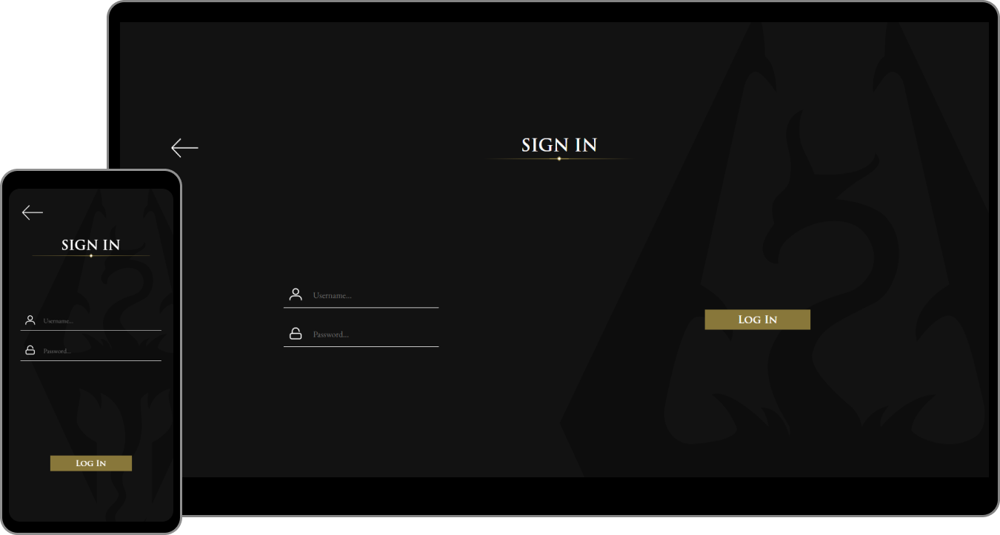
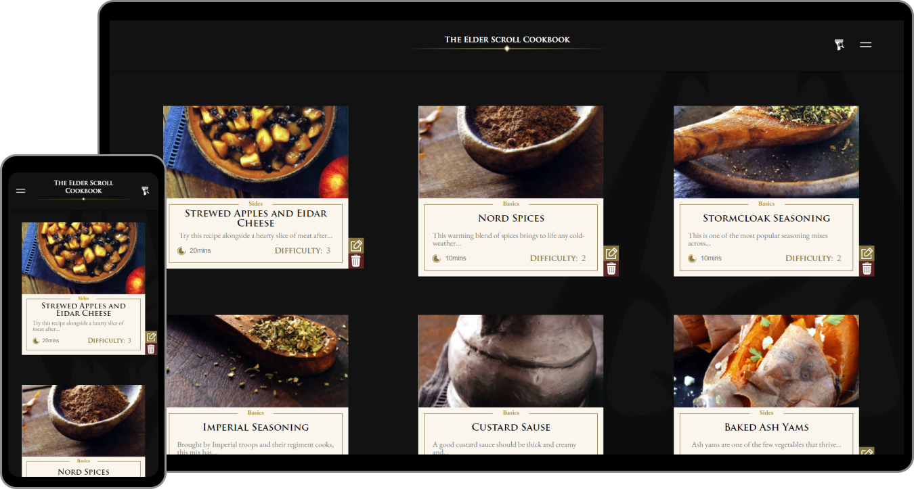
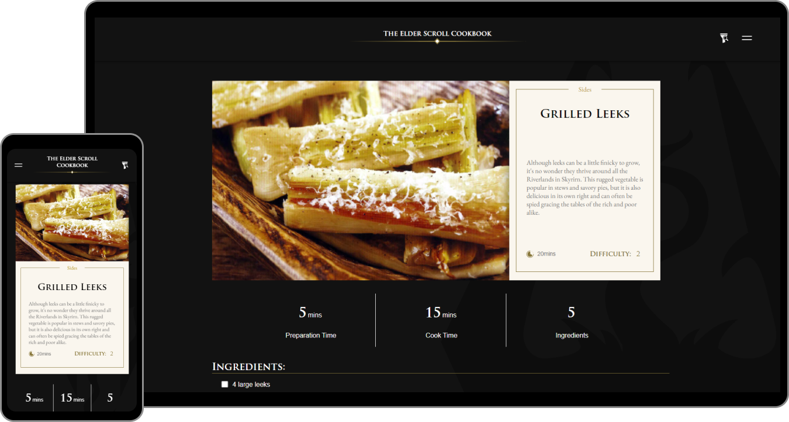
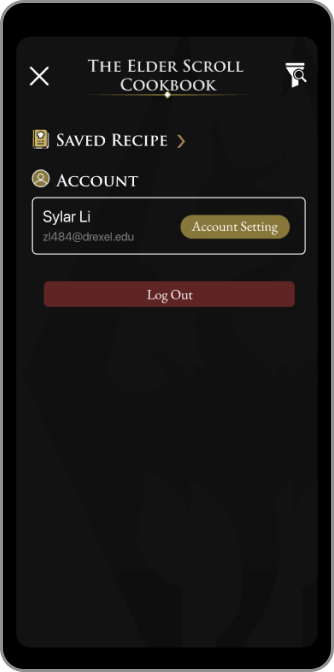
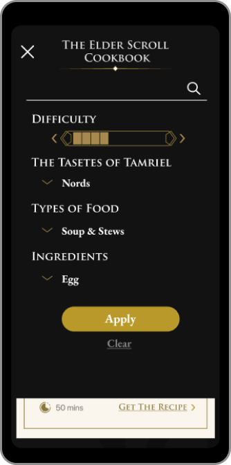

The Overview
Have you wondered what the foods in the Elder Scrolls tastes like? In this website, you will learn how to cook various dishes from different regions of Tamriel.
Tools Used
Background
This project was created for class IDM 232 which is about using PHP as the main scripting language to develop a website. Over the course of 3 months, I started from knowing nothing about using PHP to using PHP as the primary language to develop and deploy this website.
Idea
Because how powerful PHP is comparing to HTML, and consequentially how much more complicated it is comparing to HTML, a lot of the elements were separated into modals so the website can be modified easily without breaking other components.
Because this website also needs to be responsible, I tackled this with a mobile first approach.
Prototyping
A few prototypes was created before the development. I also created some guides to help my design and development.
Style Chart
The design is based on the game The Elder Scrolls Online and the book The Elder Scrolls: The Official Cookbook. Because of this, the design began with researching the typography, iconography, and color scheme.
With some experimentation, the style chart was created (see photo on the right).
Modular Approach
For this website, there are several functions need to be deployed: account system, recipe viewing, recipe managing, and filtering system.
In order to make the development easier, I separated each elements on the screen into different modular, each can be taken out or modified without affecting the other elements, and each modula will have a function assigned to it.
For example, in the recipe catalog page, the two main components are the navigation bar and the recipe cards. The card modula will be responsible for the generation of the cards, handling the functionality like edit and delete of each recipe which only appears for the admin users.
Solution
Welcome Page
Sign In
Catalog
Detailed Recipe
Menu
Filter
Moving Forward